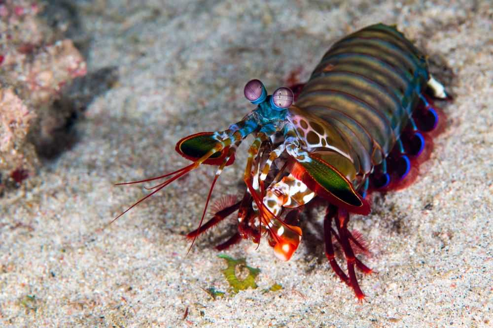

Fatos sobre o Stomatopoda
Descrição
Existem mais de 500 espécies de camarões mantis em uma variedade de tamanhos e cores do arco-íris. Como outros crustáceos, o camarão mantis tem uma carapaça ou casca. Suas cores variam de marrom a tons de arco-íris vívidos. O camarão mantis maduro médio tem cerca de 10 centímetros (3,9 polegadas) de comprimento, mas alguns chegam a 38 centímetros (15 polegadas). Um deles foi documentado até 46 centímetros (18 polegadas).
As garras do camarão mantis são sua característica mais distinta. Dependendo da espécie, o segundo par de apêndices, conhecido como garras do raptor, atua como clavas ou lanças. O camarão mantis pode usar suas garras para espancar ou esfaquear presas.
Visão
Estomatopodes têm a visão mais complexa no reino animal, excedendo até a das borboletas. O camarão mantis tem olhos compostos montados em caules e pode girá-los independentemente um do outro para examinar seus arredores. Enquanto os humanos têm três tipos de fotorreceptores, os olhos de um camarão mantis têm entre 12 e 16 tipos de células fotorreceptoras. Algumas espécies podem até ajustar a sensibilidade de sua visão de cores.

O conjunto de fotorreceptores, chamados ommatídios, são organizados em linhas paralelas em três regiões. Isso dá a cada percepção da profundidade dos olhos e visão trinocular. Os camarões Mantis podem perceber comprimentos de onda do ultravioleta profundo através do espectro visível e até o vermelho distante. Eles também podem ver luz polarizada. Algumas espécies podem perceber a luz polarizada circularmente - uma habilidade não encontrada em nenhuma outra espécie animal. Sua visão excepcional dá ao camarão mantis uma vantagem de sobrevivência em um ambiente que pode variar de brilhante a escuro e permite que eles vejam e medam a distância a objetos brilhantes ou translúcidos.
Distribuição
O camarão mantis vive em águas tropicais e subtropicais em todo o mundo. A maioria das espécies vive nos oceanos indiano e pacífico. Algumas espécies vivem em ambientes marinhos temperados. Estomatopodes constroem suas tocas em águas rasas, incluindo recifes, canais e pântanos.
Comportamento
Camarões Mantis são altamente inteligentes. Reconhecem e lembram-se de outras pessoas pela visão e pelo cheiro, e demonstram capacidade de aprender. Os animais têm um comportamento social complexo, que inclui brigas ritualizadas e atividades coordenadas entre membros de um par monogâmico. Eles usam padrões fluorescentes para sinalizar entre si e possivelmente outras espécies.
Reprodução e Ciclo de Vida
Em média, um camarão mantis vive 20 anos. Durante sua vida útil, pode produzir de 20 a 30 vezes. Em algumas espécies, a única interação entre machos e fêmeas ocorre durante o acasalamento. A fêmea põe ovos em sua toca ou os carrega consigo. Em outras espécies, os camarões acasalam em relacionamentos monogâmicos e ao longo da vida, com ambos os sexos cuidando dos ovos. Após a eclosão, os filhotes passam três meses como zooplâncton antes de se transformarem na forma adulta.
.jpg)
Dieta e Caça
a maioria das vezes, o camarão mantis é um caçador solitário e recluso. Algumas espécies perseguem ativamente as presas, enquanto outras esperam dentro do covil. O animal mata desdobrando rapidamente suas garras de raptor com uma aceleração impressionante de 102.000 m / s2 e velocidade de 23 mps (51 mph). O ataque é tão rápido que ferve a água entre o camarão e sua presa, produzindo bolhas de cavitação.

Quando as bolhas colapsam, a onda de choque resultante atinge as presas com uma força instantânea de 1500 newtons. Portanto, mesmo que o camarão erre seu alvo, a onda de choque pode atordoá-lo ou matá-lo. A bolha em colapso também produz luz fraca, conhecida como sonoluminescência. Presas típicas incluem peixes, caracóis, caranguejos, ostras e outros moluscos. Os camarões Mantis também comem membros de sua própria espécie.
Predadores
Como zooplâncton, o camarão mantis recém-eclodido e juvenil é comido por uma variedade de animais, incluindo água-viva, peixe e baleia. Quando adultos, os estomatoópodes têm poucos predadores.
Várias espécies de camarão mantis são comidas como frutos do mar. Sua carne é mais saborosa à lagosta do que ao camarão. Em muitos lugares, comê-los acarreta os riscos usuais associados ao consumo de frutos do mar de águas contaminadas.
Estado de conservação
Mais de 500 espécies de camarões mantis foram descritas, mas relativamente pouco se sabe sobre as criaturas porque elas passam a maior parte do tempo em suas tocas. Seu status populacional é desconhecido e seu status de conservação não foi avaliado.
Algumas espécies são mantidas em aquários. Às vezes, eles são habitantes indesejáveis do aquário, pois comem outras espécies e podem quebrar o vidro com suas garras. Caso contrário, eles são valorizados por suas cores brilhantes, inteligência e capacidade de criar novos buracos na rocha viva.